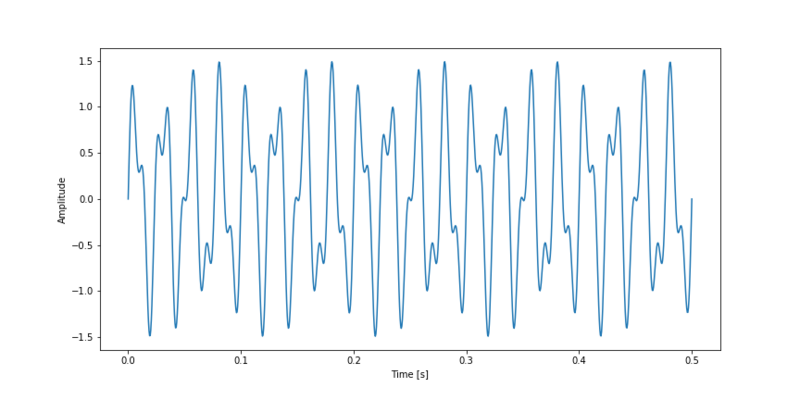
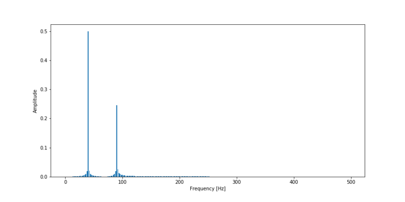

In the last couple of weeks I have been playing with the results of the Fourier Transform and it has quite some interesting properties that initially were not clear to me. In this post I summarize the things I found interesting and the things I’ve learned about the Fourier Transform.
Application
The Fourier Transformation is applied in engineering to determine the dominant frequencies in a vibration signal. When the dominant frequency of a signal corresponds with the natural frequency of a structure, the occurring vibrations can get amplified due to resonance. This can happen to such a degree that a structure may collapse.
Now say I have bought a new sound system and the natural frequency of the window in my living room is about 100 Hz. Let’s use the Fourier Transform and examine if it is safe to turn Kendrick Lamar’s song ‘Alright’ on full volume.
Time signal
The Fourier transform is commonly used to convert a signal in the time spectrum to a frequency spectrum. Examples of time spectra are sound waves, electricity, mechanical vibrations etc. The figure below shows 0,25 seconds of Kendrick’s tune. As can clearly be seen it looks like a wave with different frequencies. Actually it looks like multiple waves.
Time spectrum Kendrick Lamar - Alright.
Fourier transform
This is where the Fourier Transform comes in. This method makes use of te fact that every non-linear function can be represented as a sum of (infinite) sine waves. In the underlying figure this is illustrated, as a step function is simulated by a multitude of sine waves.

Step function simulated with sine waves
A Fourier Transform will break apart a time signal and will return information about the frequency of all sine waves needed to simulate that time signal. For sequences of evenly spaced values the Discrete Fourier Transform (DFT) is defined as:
Where:
- N = number of samples
- n = current sample
- xn = value of the signal at time n
- k = current frequency (0 Hz to N-1 Hz)
- Xk = Result of the DFT (amplitude and phase)
Note that a dot product is defined as:
A DFT algorithm can thus be as written as:
import numpy as np
def DFT(x):
"""
Compute the discrete Fourier Transform of the 1D array x
:param x: (array)
"""
N = x.size
n = np.arange(N)
k = n.reshape((N, 1))
e = np.exp(-2j * np.pi * k * n / N)
return np.dot(e, x)
However if we run this code on our time signal, wich contains approximately 10,000 values, it takes over 10 seconds to compute! Whoah… this is slow.
Luckily some clever guys (Cooley and Tukey) have come up with the Fast Fourier Transform (FFT) algorithm which recursively divides the DFT in smaller DFT’s bringing down the needed computation time drastically. A standard DFT scales O(N2) while the FFT scales O(N log(N)).
Exploring the FFT
Let’s write some code to find out what an FFT is actually doing.
First we define a simple signal containing an addition of two sine waves. One with a frequency of 40 Hz and one with a frequency of 90 Hz.
t = np.linspace(0, 0.5, 500)
s = np.sin(40 * 2 * np.pi * t) + 0.5 * np.sin(90 * 2 * np.pi * t)
plt.ylabel("Amplitude")
plt.xlabel("Time [s]")
plt.plot(t, s)
plt.show()

Complex
In order to retrieve a spectrum of the frequency of the time signal mentioned above we must take a FFT on that sequence.
fft = np.fft.fft(s)
for i in range(2):
print("Value at index {}:\t{}".format(i, fft[i + 1]), "\nValue at index {}:\t{}".format(fft.size -1 - i, fft[-1 - i]))
>>>
Value at index 0: (0.0003804834928402556-0.060555031761900024j)
Value at index 499: (0.0003804834928403944+0.060555031761903175j)
Value at index 1: (0.0015317714831371565-0.12188808528069561j)
Value at index 498: (0.0015317714831373785+0.1218880852806919j)
In the above code snippet the FFT result of the two sine waves is determined. The first two and the last two values of the FFT sequency were printed to stdout. As we can see we get complex numbers as a result. If we compare the first value of the sequence (index 0) with the last value of the sequence (index 499) we can see that the real parts of both numbers are equal and that the value of the imaginary numbers are also equal in magnitude, only one is positive and the other is negative. The numbers are each others complex conjugate. This is true for all numbers in the sequence;
For real number inputs is n the complex conjugate of N - n.
Because the second half of the sequence gives us no new information we can already conclude that the half of the FFT sequence is the output we need.
The complex output numbers of the FFT contains the following information:
- Amplitude of a certain frequency sine wave (energy).
- Phase offset of a certain frequency sine wave.
The amplitude is retrieved by taking the absolute value of the number and the phase offset is obtained by computing the angle of the number.
Spectrum
We are interested in the energy of each frequency, so we can determine the absolute value of the FFT’s output. To get a good insight in the spectrum the energy should be plotted against the frequency. Each discrete number output of the FFT corresponds to a certain frequency. The frequency resolution is determined by:
Putting it all together we can plot the frequency spectrum for our simple sine wave function. We plot only half of the spectrum, because that is the only half giving us real information.
fft = np.fft.fft(s)
T = t[1] - t[0] # sampling interval
N = s.size
# 1/T = frequency
f = np.linspace(0, 1 / T, N)
plt.ylabel("Amplitude")
plt.xlabel("Frequency [Hz]")
plt.bar(f[:N // 2], np.abs(fft)[:N // 2] * 1 / N, width=1.5) # 1 / N is a normalization factor
plt.show()

As we can see the FFT works! It has given us information about the frequencies of the waves in the time signal.
A FFT is a trade-off between time information and frequency information. By taking a FFT of a time signal, all time information is lost in return for frequency information. To keep information about time and frequencies in one spectrum, we must make a spectrogram. These are DFT’s taken on discrete time windows.
Alright
By taking a FFT result of the time signal of Kendrick Lamar’s song, we get the spectrum shown below. The frequency scale is plotted on log scale. As we assumed before the natural frequency of my windows are about 100 Hz. In the figure we can see that the most dominant frequencies occur between 101.5-102.2 Hz (30-158 Hz). My windows natural frequency is right in the middle of the dominant frequencies of the song and thus may resonate due to the high volume.
Now it is too premature to say it wouldn’t be safe to listen to this song on full volume. However if I really want to be sure about my windows I maybe should examine the frequency of another song.